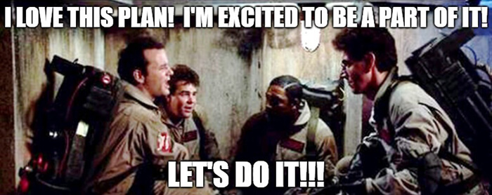
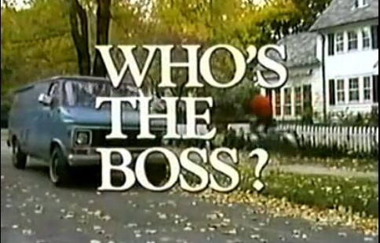

Collecting data
In which we learn what goes into a test plan, how to control the browser with your keyboard, what dark patterns are, and how to use a test script.
Table of Contents
The Brief
This week you are being assigned The Brief, a.k.a a test plan.
This is your 2nd major assignment, due June 1st (2 weeks from now).
Your final assignment will eventually be to do usability testing and report your findings. This assignment, the Brief, is your plan for that testing.
The Brief, and the Final are both individual assignments, written by you and only by you. That said, you're welcome to help each other out with the actual testing - pool your participants, take notes for one another, etc. Testing is usually a team effort.
Today we'll learn what goes in that plan, and why.
The thing you're testing
The thing you are testing is up to you.
However I strongly recommend you test something you are building/have built, as you will gain insights into your own assumptions about the user - although it might be cool to swap with a partner.
What about the thing is being tested? What are you not testing?
The scope of what you are testing is going to be partly pre-defined, and partially negotiable.
Things I decide about your scope
- You must test 5 people; either 5 classmates or 5 people outside the class, not a mix of the two.
- If testing your classmates, they must use a screenreader (which I'll show you how to use next week).
- If testing people outside the class, they must use only a keyboard (no mouse).
- As part of feedback on your brief, I will discuss with you whether your scope is too large (you're testing too many things).
What goes into a test plan?
The goal of a test plan is to convince people it's a good plan.
In the workplace, a test plan is what you submit to get approval for the plan and/or buy-in from your team. You can always make adjustments to go above and beyond!
Everything that you write in your test plan needs to have a 'why' explained.
If you want to see a test plan with all the bells and whistles, a comprehensive template is available at Usability.gov
Here are the things you need in your test plan.
The Basics
- Objective/Scope/Questions: what are you going to accomplish? What are you NOT going to accomplish? What are you trying to find out in order to accomplish your objective?
- Participants: who is going to take the test (and why have you selected them)?
- Methods: how are you going to generate data to answer your questions?
- Metrics: how are you going to measure your data?
A step beyond the basics
- Executive summary: the whole plan, summarized in a couple paragraphs.
- Schedule and location
- Equipment
- Scenarios
Objective/Scope
You're probably not going to do a full, comprehensive usability test on a large website. You can test a set of features, or you can test for a set of issues. Define what these are and why you're investigating them.
Questions
Can users find X? Does A work better than B? Do users learn the interface in under Y amount of time?
You need to explain what questions you're trying to answer, and why they matter.
A common analytics metric is the amount of time a user spends on a page. Why does this matter? It depends on the objectives of the site. Google wants users to spend a minimal amount of time on Google - it means the user has probably quickly found what they were looking for. The New York Times, on the other hand, wants users to spend a lot of time on their site, reading their content.
When you define your questions, you must also explain why they are relevant to the product owner's interests.
Participants: Some magic numbers
What are the demographics of people you're testing? How many people are you testing?
Jakob Nielsen reports the ROI thresholds in different usability testing methods:
| Quantitative | >20 |
| Card sorting | >15 |
| Eyetracking | 39 |
| Heuristics | 4 experts |
| Qualitative | 5 |
Again, remember the purpose of the test plan - to make the argument that your tests will yield results that matter. So why are you testing the people you're testing?
Also note that you don't need to write down people's names - just some demographic information to distinguish them from one another.
Methods
Define your procedure, testing type, tools, and tasks.
Make sure to include browser, screen-recording software, hardware and operating system details! These matter when trying to get good data.
Testing types and tools include:
- heuristics (don't forget to say which heuristics - as we learned, there are many different heuristic checklists),
- eyetracking (not recommended - I haven't found a webcam-based eyetracking solution that wasn't super janky, and, as we'll see shortly, you need a lot of users for your data to hold up),
- discovery (finding problems by observing users pursue loosely defined goals),
- benchmark (testing out how well solutions perform),
- moderated/unmoderated (are you talking the user through the test? or just leaving them alone and recording?)
- remote/on-site
- 5-second Opens in a new window
- First-click testing Opens in a new window
- etc., etc., etc.
There are so many different kinds of tests out there . Don't start planning with the test. Start by deciding what question you want answered, and then figure out how to answer it.
Metrics
What is the data you'll be collecting? How should it be measured? How can you be sure it fully answers your questions?
This is probably the most important part of your plan.
Examples of metrics
- Successful Task Completion
- Critical Errors
- Non-Critical Errors
- Error-Free Rate Error-free rate is the percentage of test participants who complete the task without any errors (critical or non-critical errors).
- Time On Task
- Subjective Measures These evaluations are self-reported participant ratings for satisfaction, ease of use, ease of finding information, etc where participants rate the measure on a 5 to 7-point Likert scale. A good, focussed example of this is the system usability scale Opens in a new window
- Likes, Dislikes and Recommendations Participants provide what they liked most about the site, what they liked least about the site, and recommendations for improving the site.
Additional sections you may want to include:
- Executive summary: the whole plan, summarized in a couple paragraphs. This should be the last thing you write. If you can provide an effective, accurate summary, you've probably done a good job overall. Note that students often write an introduction instead of a summary. Writing an introduction is fine, but don't call it a summary.
- Schedule and location: Since you'll likely be doing this testing remotely, this probably isn't super important to have documented, but you'll need to figure this out at some point anyway.
- Equipment: If you're using anything more elaborate than the items listed in the 'methods' section, you'll likely want to make note of it.
- Scenarios: I only listed this as 'may want to include' (rather than 'must-have'), because not all testing types require scenarios. That being said I'm pretty darn sure you'll all want to write out your scenarios.
As I'm sure you'll remember from last week, scenarios are the tasks & goals that your users will try to complete.
Examples of test plans
To summarize:
On June 1st, you'll submit a written plan for testing some feature, or set of features - preferrably something you built.
You can test 5 non-classmates while they use a keyboard (no mouse), or 5 classmates while they use a screenreader.
The goal of the plan is to convince people that the plan will find out stuff that will make things better for users.
You've got a lot of options for how to write your test plan, but this would be a good structure:
- Executive Summary: here's a summary of everything in the plan
- Objective: this is why we're testing
- Scope: this is what we're testing and what we're not testing, both in terms of website features, and in terms of the data we're generating
- Scenario: the goal a user would have when using the feature
- Methods: we'll read to the user from the script (attached), asking them to complete the scenario, then record their screenshare. When they've completed, we'll ask them to complete the customized version of the System Usability Scale through Google Forms.
- Metrics: critical error rate, non-critical error rate, time on task, SUS.
- Equipment: what operating system and browser are each of the individual participants using during the test?
Learning to use the keyboard
Keyboard controls are key for accessibility - that's why I'm having you test non-classmate users (if that's who you decide to test) with the keyboard.
Feel free to teach them if they don't know how!
Also - the only form control that's not captured here are radio buttons - they can be a little unintuitive if you've never used them with a keyboard before.
| Command | Mac Shortcut | Windows Shortcut |
|---|---|---|
| Scroll up/down | ⇧ / ⇩ |
|
| Previous page | Cmd + ⇦ |
Alt + ⇦ |
| Next page | Cmd + ⇨ |
Alt + ⇨ |
| Change focus to next focussable element | Tab |
|
| Change focus to previous focussable element | Shift + Tab |
|
| Click on focussed element (i.e. link, submit) | Return |
Enter |
| Change the value of a form element (i.e. dropdown) | ⇧ / ⇩ |
|
An activity
- Go to toronto.ca Opens in a new window
- Get to the section with the breadcrumbs "City of Toronto / Business & Economy / Industry Sector Support / Film / Plan Your Shoot / Letters of Notification"
- Find the phone number for the Toronto Film, Television & Digital Media Office.
If you like using the browser with the keyboard, you may enjoy what is probably my favourite browser extension Opens in a new window.
Who's the boss?
When creating a test plan, we must ask the right questions. The right questions can tell us how to improve things. In order to ask the right questions, you must first know who are you trying to improve things for.
In the above image, someone has asked the question "How do we increase our newsletter subscriptions?"
And the answer is "A pop-up will increase our newsletter subscriptions by 5%".
No one asked the question "Will 95% of our users hate their experience?"
Just to take this one step further, I want to talk about something called 'dark patterns'.
Dark Patterns
Dark patterns are design patterns that are meant to manipulate the user.
Dark patterns are not bad design - they are good design for bad reasons.
| Psychological Insight | Applied Honestly (benefits users) | Applied Deceptively (benefits business) |
| “We don’t read pages. We scan them” —Steve Krug | Aid rapid comprehension: ensure key content is shown in headings, subheadings (etc), using a strong visual hierarchy. | Hide key information: Bury facts within paragraphs of text, so some users will proceed without fully understanding the transaction. |
| “People tend to stick to the defaults” —Jakob Nielsen | Prevent mistakes: Default to the option that’s safest for the user. In important contexts, don’t use defaults and require the user to make an explicit choice. | Benefit from mistakes: Ensure default options benefit the business, even if this means some users convert without meaning to. |
| “People will do things that they see other people are doing” —Robert Cialdini | Show unedited feedback: Allow real customers to share their experiences, so they can make accurate pre-purchase evaluations. | Bury negative feedback: Hand-pick positive feedback and display it prominently. Bury negative feedback so it is hard to find. |
A List Apart: Honesty in UI Design Opens in a new window
Dark patterns test really well.
Dark patterns could be in legacy code, they could be given to you to develop, or they could even come from you.
This type of design happens because decisions are being made based on business metrics, not a focus on the user. Whether the company is malicious, or just lazy, doesn't really matter to the end user. But if you see this type of design happening regularly at your work, it might be time to look for a new job.
You need to write your usability plan so that you justify all your choices to the product owner.
On rare occasions, the product owner will have interests that won't be apparent to the user (for example, Do customers notice if we move to cheaper hosting?). If your product owner has interests that conflict with the user, you should run the other way.
Helping one another
You are biased (don't worry, everybody is)
This is an individual assignment. You will write your test plan alone. You will present your test results alone.
I want you to consider performing the tests with a helper.
You are not aware of everyone, and worse yet, you are not aware of yourself. You are not objective. That's ok.
In “Usability Problem Description and the Evaluator Effect in Usability Testing” a study by Miranda G. Capra at Virginia Tech, she found that 44 usability practitioners’ evaluations reported problems that overlapped by only 22 percent.
Confirmation bias is likely going to be your biggest issue to watch out for, in yourself and other members of your team. It can occur in planning (how you phrase your questions), testing (how you interact with a subject), and analysis (how you interpret the data).
You are less biased when you work together
Capra found that '[a]dding a second evaluator results in a 30-43% increase in problem detection'.
You are less biased when you stick to the script
A key reason we write our test plan is for transparency. We need to make our work reviewable so that our unconscious biases can be recognized. The more we can script, the better.
Steve Krug is one of the big names in usability, and he has given us a wonderful sample script to work from. Let's take a look Steve Krug's sample script Opens in a new window.
An activity
Get together in pairs, and read the script to one another.
Answer the following questions:
- How will this script need to be adapted for remote testing?
- What is the purpose of questions like "what’s the split between email and browsing [in your weekly internet usage]"?
- Why do we need to assure the user "we’re testing the site, not you"?
- What type of data is being collected here? Quantitative? Qualitative?
- Find four examples of the types of data that could be collected in this user test.
- What would you change in this script? Why?
Component of the Week: Links
Ah, the hyperlink: the core concept of the World Wide Web.
<a href="the internet">You're welcome.</a>Simple and straightforward, but so ubiquitous and flexible as to invite abuse, and therefore, inaccessibility.
As I'm sure you've heard, one of the cornerstones of accessibility is semantic markup. In other words, use elements for their intended use. We'll better understand the purpose of an anchor tag shortly.
There are only a couple of accessibility mistakes you can make with an anchor tag, while still using it semantically.
One mistake I made for years: the text of a link should not be a URL. Many popular screenreaders will not allow the user to skip while it reads the text of a link.
<a href="guesswhat.co.uk">
https://www.guesswhat.co.uk/I/sound/super/
annoying.php?so=don-t&do=this&to=your&user=ok</a><a href="guesswhat.co.uk">
You know what? Large volumes of text inside
links are also not a great idea. We can't put long,
rambling text in our links like we used to,
but we have our ways. One trick is to tell 'em stories
that don't go anywhere - like the time I caught the
ferry over to Shelbyville. I needed a new heel for my
shoe, so, I decided to go to Morganville, which is
what they called Shelbyville in those days. So I tied
an onion to my belt, which was the style at the time.
Now, to take the ferry cost a nickel, and in those
days, nickels had pictures of bumblebees on 'em. Give
me five bees for a quarter, you'd say. Now where were
we? Oh yeah: the important thing was I had an onion on
my belt, which was the style at the time. They didn't
have white onions because of the war. The only thing
you could get was those big yellow ones...</a>Another thing to keep in mind is that links are an in-page navigational tool. When using the keyboard to navigate a page, the user can hit the tab button to go to each interactive element in sequence. This means that if the context for a link comes before that link, people using screenreaders will have not context for that link. Stuff like this is really unhelpful:
<a href="/somewhere-else">Read more</a>That being said, just like with images, screenreaders will inform the user that what they're focussed on is a link, so it's redundant to tell them:
<a href="https://en.wikipedia.org/wiki/Redundancy">
Link to Read More about Redundancy</a>And finally, shifting a user into a new window or tab can be disorienting if you don't give them a heads-up.
<a
href="https://en.wikipedia.org/wiki/Tab_(interface)"
target="_blank">Read about Tabs on Wikipedia
<span style="font-size: 0"> Opens in a new tab</span>
</a>Let's see what happens when we start to get "creative" with links:
// Links must be recognizable
<a style="text-decoration:none;">
I need a non-colour visual indicator</a>// There is a temptation to use links as buttons.
// That's bad, because the user is told it's a link.
<a onclick="tooLazyToStyleAButton()">
Why can't buttons be buttons?</a>// But I want my image to be linked!
<a href="/image-destination">
<img src="this-totally-works.jpg"
alt="The user will be read the alt text
as the link text!" />
</a>If you have something that behaves like a link but for some very good, very important reason cannot be an anchor, you can use the 'role' attribute.
'role' is an ARIA attribute, which we'll dive much deeper into in the second half of the term but notice what it does here - when HTML isn't semantic, it provides the information that WOULD have come from the semantic element.
<style>
[role="link"] {
color: blue;
text-decoration: underline;
cursor: pointer;
}
[role="link"]:focus {
outline: 1px dotted black;
}
</style>
<div
role="link"
onclick="window.open('https://google.com')">Link
</div>That's it!